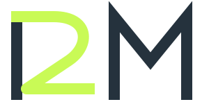

The R upright stays. The curve carries the 2.
The extra diagonal leg is removed.
No overlaid numeral. The straight stem and curved body are the entire first letterform.
Lime highlights the shared curve; it does not introduce another shape.